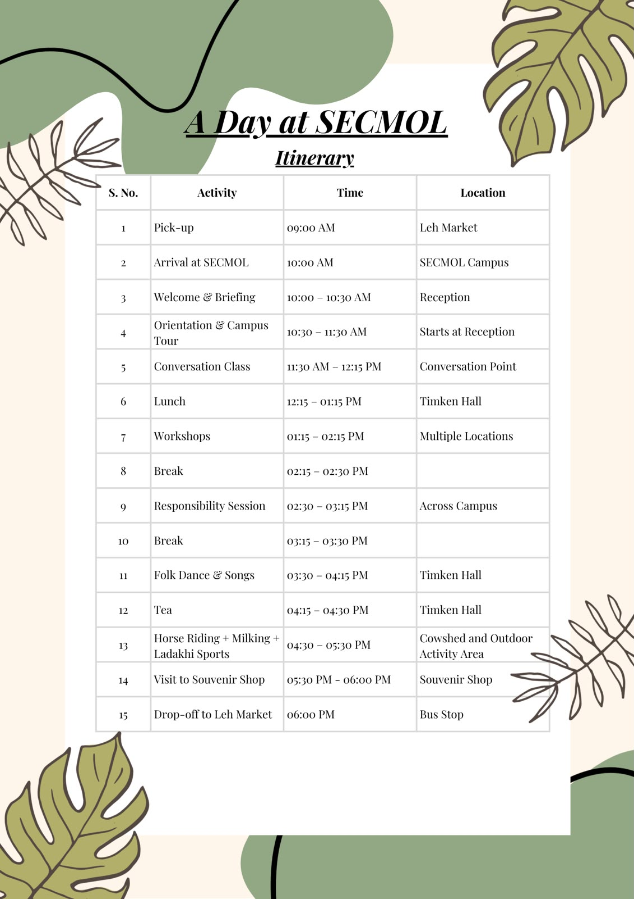
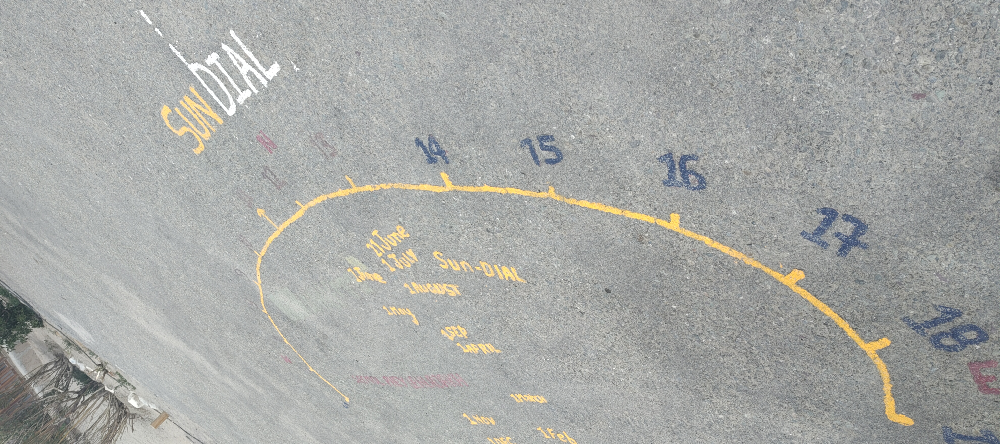
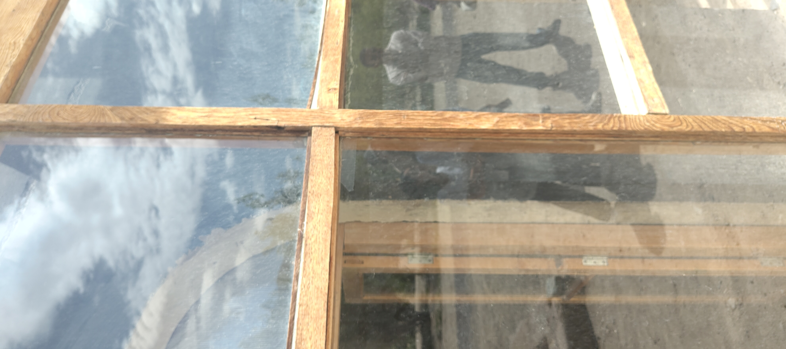
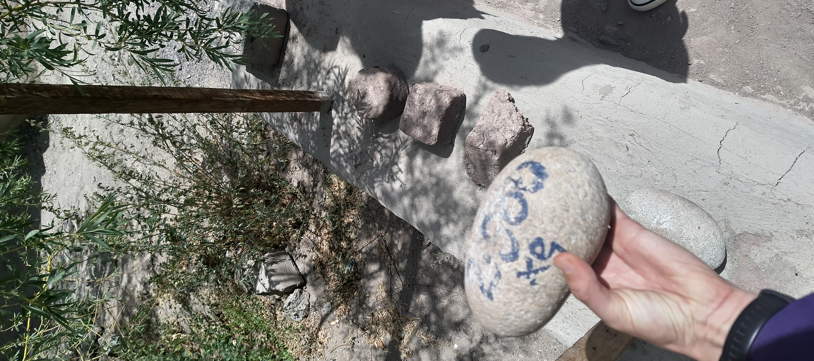
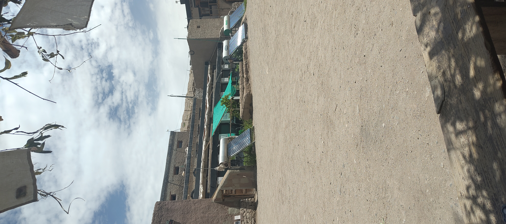
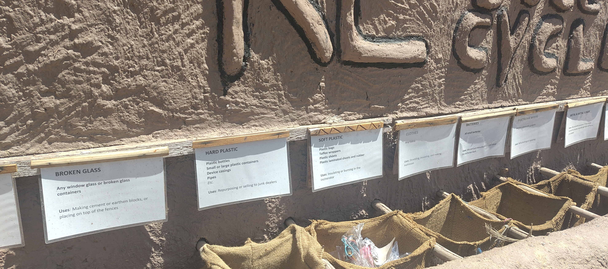
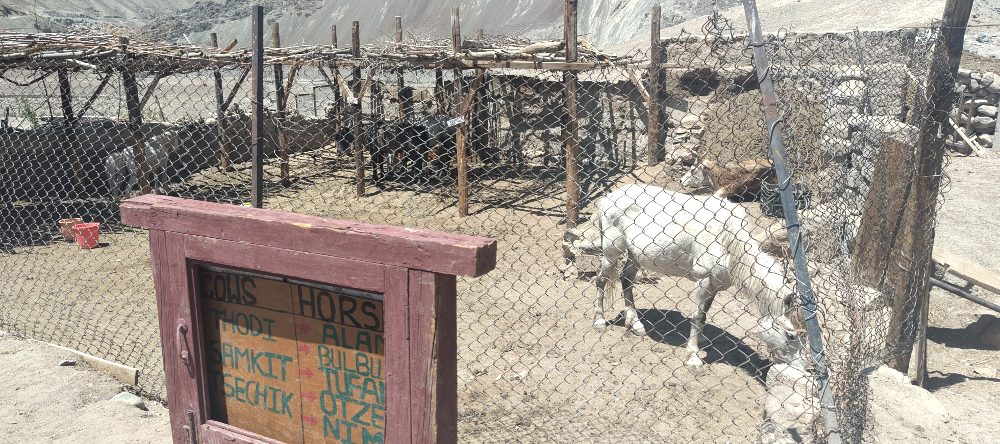
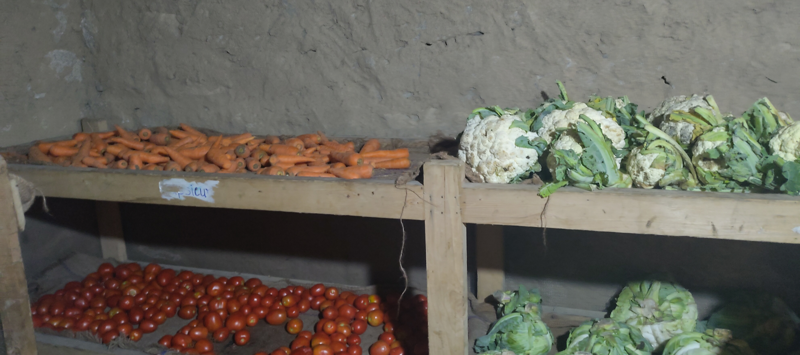
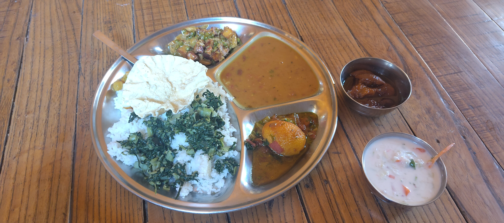
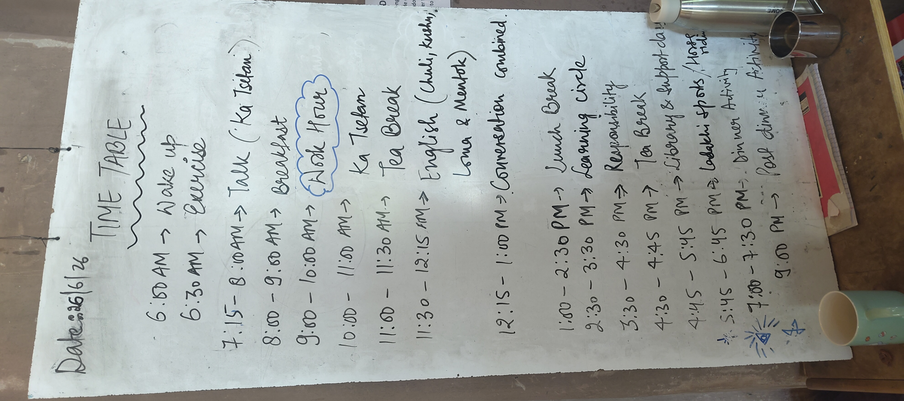

context
We went to visit the secmol school with volonteers from there, a few locals and foreigners, and yours truly.
This is the first time a visit like this happened, and it was very instructive!
Links to situate it on the map and if you’re curious before diving into the visit:
https://maps.app.goo.gl/TrSTX2CahKoMZ7jLA?g_st=ac
http://www.secmol.org/

Now without further ado, let’s visit!
The visit
The director introduced us;
Secmol is fully solar powered and was create by a climate/education activist founder 20 years ago.
It is very popular in India, and works with volunteers and by responsabilizing the learners, and showing them various activities so they can know what they like most.
They used natural resources to build the buildings, which are passively solar heated! Amazing.
The students manage the reception and little shop at the entry, and in general they manage as much as possible themselves.
Going further, there is a solar system to scale on the path and solar dial where you put yourself at the right place. And they have a whole solar system up to scale on the ground that unravels as you progress further into the school.

architecture
The walls are thick, the windows are south and double glazed, they use the knowledge they teach in practice. Materials re-used.
Even in -20 degrees it is still 18° inside, and it’s not too warm in summer. The materials in the wall make it keep heat, absorb it and give it back during the night (using water bottles, with water and salt, this also re-uses plastic bottles). They use thermal repellant on the roof. The director explained the sun angle is higher in the summer than winter, and they use what they teach in practise by building smart buildings that take all of that into account!
idea architects could reinvent themselves to do this too, our issues with heat comes from bad design in the buildings, now we have smarter strategies for using local materials etc taught at school it just needs to be used in practice.

Students have to tell the temperature inside and outside, they see arches, there are elements and their weights… A lot of practical aspects to learning.

Water comes from the mountains, but that was not enough to be self sufficient, so they have other sources like a well bore, and use a dry compost toilet to avoid wasting water… The site can handle up to 150 people when the summer camp happens, otherwise it’s 70 on average.
Everything runs on the sun automatically, though they also have batteries. For compost toilet they change the soil every 2 years and every year switch toilet, they also have organic vegetables. It’s a complete cycle.
idea this can be a good business to sell these toilets and then take care of the remains for ppl in europe. Use capitalism the right way

Students get responsibilities for 2 months and can suggest improvements and changes in the by-monthly parliament.
waste

Good sorting to make one more aware but more importantly they avoid waste at the source, students may not bring junk food but they can bring samosas fruits etc.
farm

Girls are being taught horse riding as well as the boys, they have cows and all the animals have names.
Milking also means recording the production (math then statistics). Practical so it comes alive and is useful.
food
The vegetables are kept underground and this is enough of a refrigerator.

The food was a very varied thali with great taste. I talked with someone who was elected the current student lead.

the cursus
The school gives a one year curriculum for students who have difficulty in the traditional education system.
The book they have presenting it is fascinating.
They believe in learning by doing, but just saying that doesn’t give it justice.
The book has only useful courses with their context. Math? Organizing food.
From cows to solar panels passing by governance, hospitality etc etc, all divided in sections that make sense, and everything is present on site and practical!
I feel like those who would come out of this cursus truly could contribute to society, also certain years they focus on some task like masonry or else.

I will note that the schedule seems quite full, but apparently that’s on purpose. This is like kung fu but for the mind. But the activities are not that hardcore really, and if you take a close look you’ll see there is not that much time dedicated to.. Learning! Ha.
Phones are also forbidden here. They have 20 days of vacation to see their family.
conversation class
Every day they have 45 min conversation class with the students. We had the opportunity to join them, and the conversations were around culture exchange. This is how they learn english.
Well, believe it or not, I talked about shadow self and somehow their festival was related: the black and white oracles go in a 6 months meditation before revealing the prophecy, each time someone else doing it. Everyone goes there and it’s very crowded. I also learned they come from small villages but live in Leh, and most of them came to this school to boost their confidence and find direction.
aviation class
Good class with practical demos for gravity with balls etc, more interesting than any class I had probably and somehow also denser.
Gnss (=/ gps, that is the american one), radar, lift and how it works with the winds of the plane and pressure difference to get them up.
Thrust, drag and the cockpit of a plane, I’m almost ready to fly with one.
Plus we got a helicopter rotator to play with (small one)
Direct vs indirect waves: we use fast direct waves now which don’t go through the mountains, making ladakh landing hard, relying on visual indicators like the mountains which pilots have to learn by heart.
dance/sport class
Ladakhi funny dance. Moving around like that is more of a workout than one would expect!
founder
The founder made another school, aimed at college students.